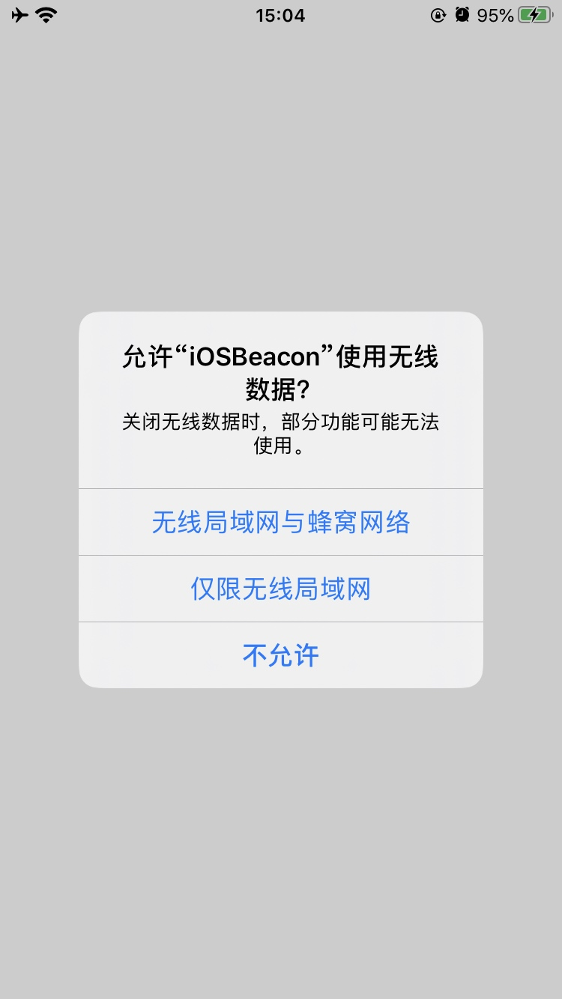

Beacon generation for iOS attacks
Test-oriented preview version

When creating a beacon through the .cna plugin, you can choose System as iOS, Arch and choose arm64 target platform (only arm64 is supported for the time being).
Finally, a dynamic library .dylib file of the specified architecture will be generated. You can choose to package the dynamic library into the specified IPA installation package or inject it into the specified App.
The final reconnect code will be executed automatically when the dynamic library is loaded. It should be noted that ordinary apps need to be utilized by the app itself and the user has applied for network permissions before the reconnect can be initiated.
If it is your own app, you need to consider matters related to the user's application for network, photo album, phone, recording and other permissions during development.

And when performing file upload and download operations, if it exceeds its own permissions, the current process may be forced to kill by the system (not yet resolved)
Root-launched App even if the user has ended the process in the foreground, and the background can still run the beacon thread started by the App when it loads.